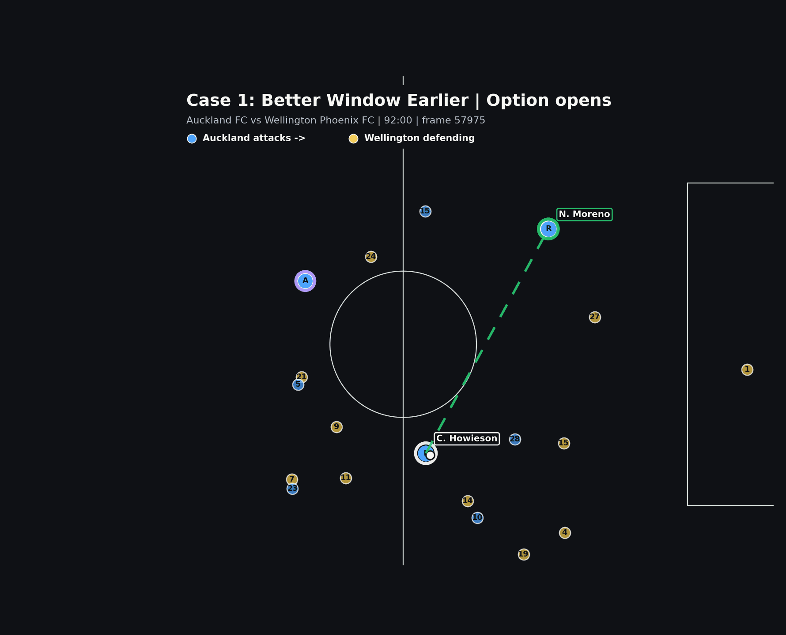

Howieson to Pijnaker
Safe, completed, and low value. This is not treated as a failed action.
0.004xT
0.992xPass
receivedoutcome
Howieson completed the safer pass. Moreno was the higher-value option, but the cleanest progressive window appeared before the ball was released.

Not "Howieson clearly missed an easy pass." The report asks when the Moreno option was actually playable.
The value layer identifies Moreno as the more threatening progressive option. Decision Friction adds the timing layer: at the reviewed opportunity frame, Moreno keeps almost all of his theoretical value; 1.7 seconds later, at the pass frame, the same lane has tightened.
The selected pass was successful. The review is about whether a higher-value window existed before that release.
SkillCorner provides the option and value layer. The report packages the extra playability context around that option.
Safe, completed, and low value. This is not treated as a failed action.
Higher-value progressive option. The key question is when it was cleanest.
The xThreat gap is large enough that the unused option deserves review.
By the pass frame, the lane score had fallen from 1.00 to 0.36.
The actionable question is timing, scanning, and window recognition.
Open the sections below only when the review needs frame provenance or a plain-language metric explanation.
| Moment | Frame | Gap | Interpretation |
|---|---|---|---|
| Possession starts | 57975 | - | Howieson first controls the ball. |
| Moreno option opens | 57975 | 0.0s | The candidate exists immediately. |
| Opportunity frame | 58006 | +3.1s after possession start | Moreno is at his cleanest scored moment. |
| Pass frame | 58023 | +1.7s after opportunity | Howieson passes to Pijnaker instead. |
| Moreno option closes | 58023 | 0.0s after pass | The option closes on the pass frame. |
Of the value this option carries, how much was actually executable from the tracking geometry at this moment?
The geometric mean is intentionally strict. If one component is very poor, the whole playability score drops instead of being hidden by strong scores elsewhere.
How much theoretical value is lost after accounting for whether the pass was playable?
In this case, friction is low at the opportunity frame because Moreno was clean earlier. The review point is that the lane tightened by the pass frame.
| Component | Opportunity frame | Pass frame | Read |
|---|---|---|---|
| Lane access | 1.000 | 0.358 | Main deterioration: the passing lane narrowed. |
| Passer pressure | 1.000 | 1.000 | Howieson was not under direct pressure. |
| Receiver separation | 1.000 | 1.000 | Moreno stayed free. |
| Movement fit | 0.748 | 0.982 | Good enough at the opportunity frame; stronger by release. |
| Timing | 1.000 | 1.000 | The option was still active. |
| S_play | 0.944 | 0.811 | Playable, but less clean after the delay. |
| Output | Opportunity frame value | Plain-English read |
|---|---|---|
| xThreat | 0.0344 | The theoretical value of the Moreno option. |
| Playable value | 0.0325 | Most of that value was accessible at the clean frame. |
| Decision friction | 0.0019 | Very little value was lost to playability constraints at that moment. |
| Reason code | none | No component was constrained enough to assign a pitch-facing reason code at the opportunity frame. |